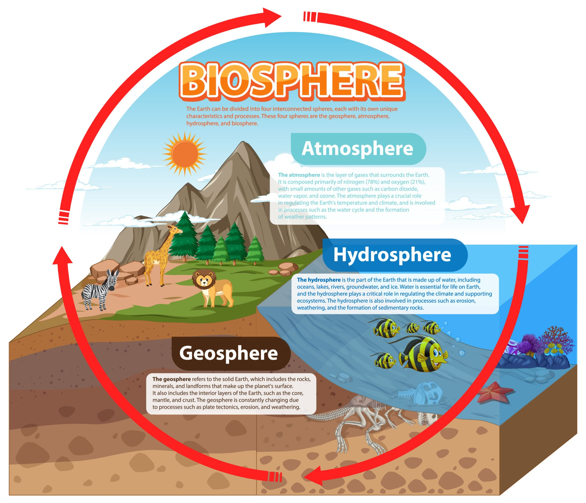

The Biosphere is the global ecological system integrating all living beings and their relationships, including their interaction with the other spheres.

Biosphere
Ecosystems
Examples specific to the contexts of communities of living things interacting with their non-living environments would be forests, deserts, and coral reefs.
Biogeochemical Cycles
As the name would suggest, these critical cycles include the circulations between the biosphere and other spheres of matter and energy. Examples include those of carboxn, nitrogen, and water.
Biomass
The total mass of living organisms in a given area or volume. It is the living component that interacts with and uses matter from the other spheres.